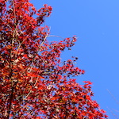
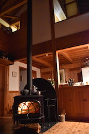
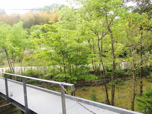
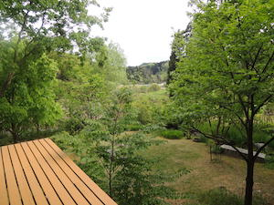

One’s Way –それぞれのあたりまえ–2019秋
「One’s Way にオールディズバンドがやってくる」
One’s Way でオールディズバンドのライブを開催します。
bue-dueの家具に囲まれた室内で紅葉の庭をバックに音楽を楽しんでいただけます。
薪ストーブの温かさも実感してもらえるかも！
日時：11月17日（日）開場 15:00 開演 15:30
会費：500円（未就学児無料）
地元で活躍中のクラッカーズの演奏をお楽しみください！
みなさまのお越しをお持ちしています！


One’s Way –それぞれのあたりまえ–2019春
「One’s Way の Open House & Garden」
One’s Way の家と新緑の庭を開放します。
recommendでご紹介しているbue-dueさんの家具、天野一男さんの建築、宮田邦彦さんの職人技、リイフスさんデザインの植栽等をお楽しみください。
自家製ケーキとみどり共同購入会のコーヒーをご用意いたします。
日時：５月４日（土）13:00〜18:00
５日（日）10:00〜18:00
６日（月）10:00〜13:00
会費：大人500円 小人200円（未就学児無料）
みなさまのお越しをお持ちしています！
里山でのタラノメ、ワラビ、ウド、庭でのカモミール等の収穫体験を計画中です。

